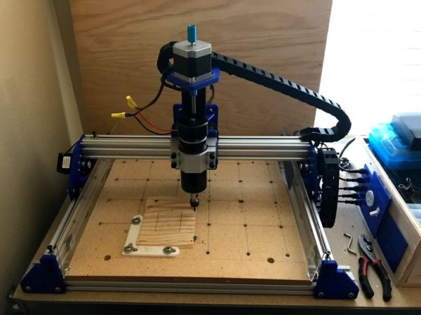
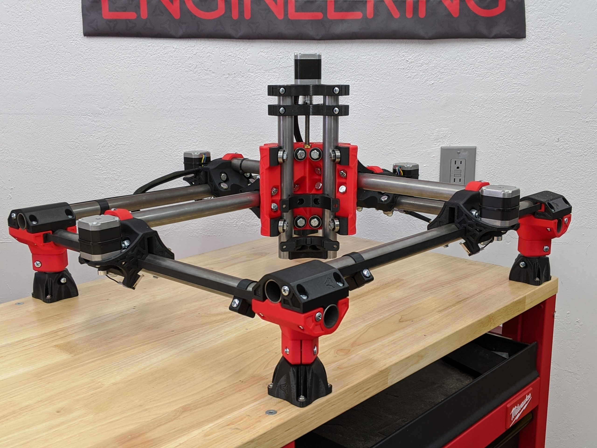
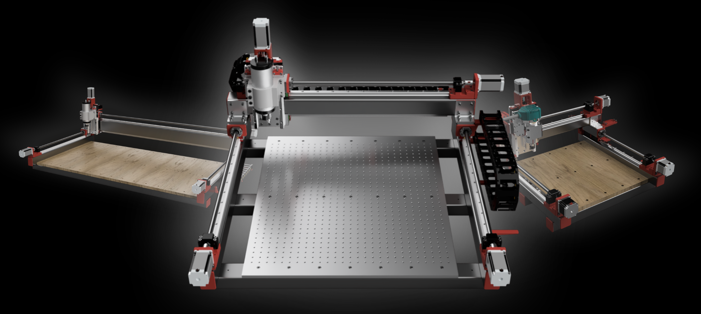
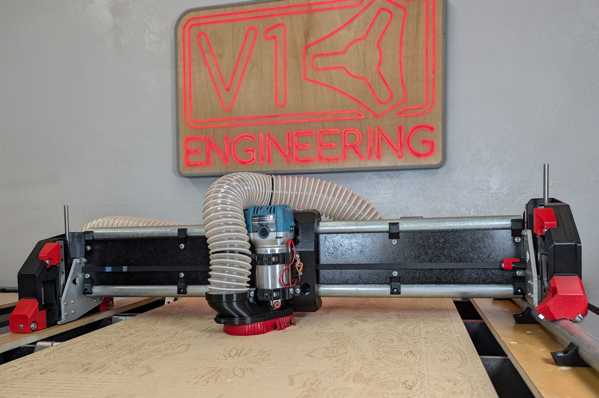

Criteria
At the beginning of a project, it's always wise to ensure that you have a clear (or at least a consistent) goal in mind. If you don't know what you're doing, you have already failed. I could just say that my goal for the first half of this project is to build (and learn how to operate) a CNC router. But I can do better than that. There are a few properties this router should have that will help me figure out exactly what this project will look like:
- I would prefer if it could accept 4' by 8' stock material. It doesn't have to be able to cut it all at once, but it would be nice if a piece of stock could fit into the CNC without needing to be ripped first. For example, the CNC could have a cutting area of 4' by 2' if the cutting area is open on the long side.
- It should be reasonably cheap. I would like for it to come in at under $1000 in total, but I would settle for costing under $1000 before counting the tool itself.
- Since this is my first real foray into working with a CNC machine (not counting 3D printers, of course), I would prefer something boring, standard, and maintainable over a more interesting or exciting design that will suck up dozens of unnecessary hours of tuning and troubleshooting (though I am under no illusions as to the amount of tuning and troubleshooting even the most basic CNC will require).
- Finally, practically speaking, I would like the CNC to be able to cut at least wood and thin aluminum. I plan to primarily use it for sheet materials, so I don't need a lot of range on the Z axis.
There are also a few things that I don't have to worry about too much when choosing a CNC design:
- I don't need this to be the fastest CNC out there.
- Since this will live in my basement, space is not (much of) an issue.
- I have enough experience with 3D printing/CAD work that I would feel confident incorporating large quantities of 3DP parts into the CNC if that would be beneficial.
Design Options
Given those constraints, I set out to look at my options. After a few hours of research, I had four different plausible designs (and a lot more implausible options, which are omitted here for the sake of brevity). I briefly considered trying to design my own CNC from scratch, but quickly realized that that would be a foolish choice for my first work with a CNC.
Tiny Big Dog Designs CNC V2
The first feasible design I found here was the Tiny Big Dog Designs DIY CNC. In retrospect, I don't know how I found it first, given that it is, by far, the project with the least internet presence out of these 4. It seems to literally just be some guy with a blog who recorded his process of building a CNC for posterity. It's very small, at 13" by 9.5" (though it could be extended easily enough), and built from v-slot extrusions. I only considered this because I originally was aiming for a smaller machine; once I decided that it should be able to handle 4' by 8' stock, this design became too small to reasonably consider.
The MPCNC
The Mostly Printed CNC (MPCNC) is designed by V1 Engineering, a small company that seems to be run by one guy. As the name implies, it relies heavily on 3D printed parts. It also uses 1" steel conduit, rather than extrusion. While it could potentially reach the sizes that I'm aiming for, it is recommended to be no larger than 3' in its longest dimension. The MPCNC also benefits from being very mobile, but this isn't really much of a selling point for me, since it will just live in my basement anyways. Another upside is the price, which is at roughly $500 including 3D printer filament and a (weak-ish, but serviceable) router. While I considered the MPCNC for a while, I ultimately decided against it because it isn't really designed to take 4' wide pieces (the 1" steel tube will move enough that the tool starts to chatter) and the Lowrider V4 (below) does a lot of the same things at a larger size.
The PrintNC V4
The PrintNC V4 seems somewhat more professional than the MPCNC. The official website suggests that building the PrintNC would cost between $1500 and $3000, and their recommended size is a 3'2" by 2' work area, though that could easily be stretched to 4' by 2' without significantly changing the design. PrintNC does seem higher quality than the other options on this list (the fact that it's on version 4 seems like a good sign), but it also looks like it would be a substantially bigger project, and would take significantly longer to make and more effort to maintain. It's also, despite the name, not especially reliant on 3D printed parts. These are potentially surmountable problems, but, between them and the price tag, I ultimately decided against the PrintNC.
The Lowrider V4
The Lowrider V4 is also designed by V1 Engineering. The Lowrider V1 was originally designed as a larger version of the MPCNC, but its popularity seems to have eclipsed that of its progenitor. It is a decent bit more expensive than the MPCNC (its website estimates $800), however it also looks to be a fair bit more capable. It can be built in a variety of sizes, but they recommend 4' by 8' (I would probably go a good bit smaller). It takes slightly larger steel conduit than the MPCNC (about 1.25"), and has a couple design quirks that differentiate it from the other 3 machines. For one, its range of motion in the Z axis consists of moving the entire X axis beam up and down. This means that the cutting tool will be more stable the lower it is, in contrast to most machines where keeping the tool higher results in more stability. This is also how it got the name "Lowrider."
Additionally, its Y axis consists of only one rail on one side of the machine and a timing belt on either side. This design choice is interesting to me: supposedly, it avoids the difficulty of aligning two rails and makes it easier to move the machine if necessary. Again, moving the machine isn't a super high priority for me. This design does have a lot of the benefits of the others: it boasts strong documentation like the MPCNC and PrintNC, a good range of sizes like the PrintNC, being on its fourth version (meaning that it's relatively well-tested), and a price only modestly greater than the MPCNC.
A Decision
Ultimately, I decided on the Lowrider V4. In the next week or so, I plan to start 3D printing the (many) parts I need to print and sourcing the remaining parts. As part of this, I'll need to pick a size for the machine: I'm currently thinking in the neighborhood of 4' by 3' or 4' by 4', but I need to narrow it down and get a precise number.